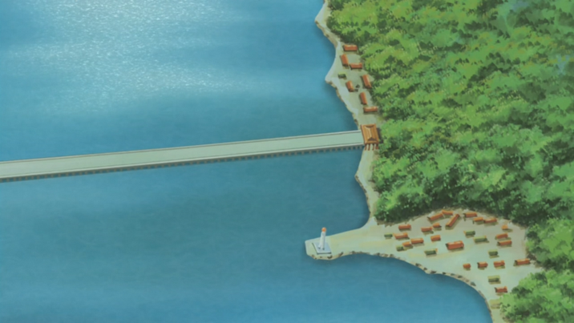
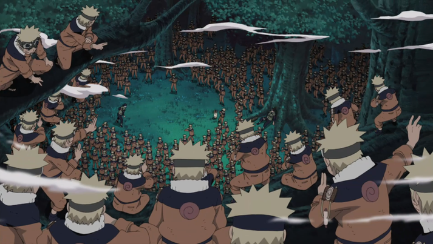

Rasenshuriken
My father invented the rasengan (the blue circle in the middle) but it was still an incomplete technique, and he passed away.
At this point in time, I needed a powerful weapon and took this task upon myself to
combine the rasengan with my chakra nature (which is wind release).
The rasenshuriken is can be used both close range and long range. When it hits a target it slices on molecule level and does great damage.
Great Naruto Bridge

An architect needed help with the bridge. Team 7 (my team) went over to assist him.
A lot happened and many fights occured. The bridge was jeopardized but in the end the bridge stayed and got
completed. I respesctively, played a huge part in the completion of the bridge, hence the bridge got the name "The
great Naruto bridge".
Multiple shadow clones

There are very few people that can use this technique which I invented. It is as simple as it
sounds and shows in the picture. When I use this technique, multiple clones appear. When the clones takes damage and disappears,
the original one wont feel the damage. But when the clone returns, I will gain all the experiences and knowledge from the clones.
I like to use this teqhnique to trick my opponents and to set up an attack. You never know which one is the real one!